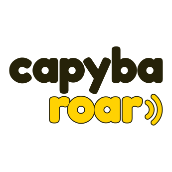
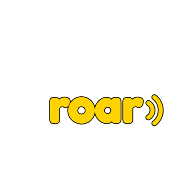
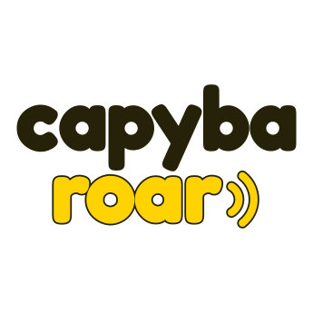
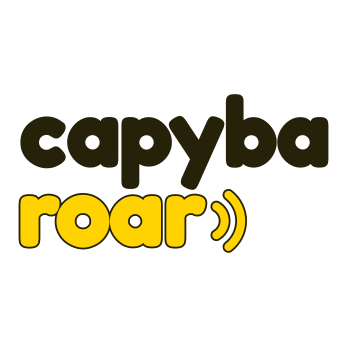

Capybaroar brand kit
One wordmark, one yellow.
"capyba" in ink, "roar" in yellow with a thin ink edge, and two sound waves after the last r. Fredoka Bold, outlined, so no font is needed to draw it.

Wordmark
The main logo. Light on white and light grays, dark on ink and photos, one color when color isn't possible.

Stacked and icon
"capyba" over "roar", right-aligned so the waves end on the a. For squares: the collapsed sidebar, avatars, app icons.


Stacked alignment
Right-aligned reads as one block. Picked.



Small sizes
Below 48px the words can't be read, so favicons use the small icon: the yellow o of "roar" and its waves. It beat a bold "r" with waves at 16px. At actual size:
Minimum sizes
Smaller than this, use the next mark down.
Clear space
Keep the height of the "a" (the x-height) free on every side. Nothing else sits inside it.
Colors
The logo uses three. They're the app's signal, on-signal and white.
signal
on-signal
Do and don't
The app never sets yellow text on white. The logo is the one exception, because "roar" carries its ink edge.
Type
Fredoka is for the logo only, and only as the outlined drawing. Everything else is Inter.
| Logo | Fredoka Bold (700, width 100), tracking -0.025em, lowercase. SIL Open Font License. |
| App, site, emails | Inter, 13px in the app |
| Never | Typing "capybaroar" in Fredoka as live text, or setting other words in Fredoka |
Files
In brand/. Rebuild with npm run brand.
| svg/ | wordmark and stacked in light, dark, ink, white; icon, icon-yellow, icon-small |
| png/ | every lockup at 1x, 2x, 4x; icons at 1024, 512, 192, 180, 48, 32, 16; og.png |
| favicon.ico | small icon at 16, 32 and 48 |
| src/ | Fredoka, build.py, render.mjs, the OG templates |